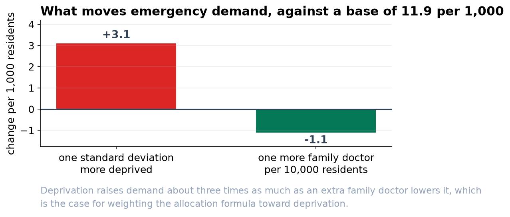

Deprivation Drives Emergency Demand. Family Doctor Supply Offsets Part of It.
Two findings we are confident in, one we are not, and a warning about the version of this analysis that circulated earlier.
Recommendation
Across 40 districts over four years, the overall rate is 11.9 emergency visits per 1,000 residents per month. A district one standard deviation more deprived runs 3.1 visits per 1,000 higher. A district with one more family doctor per 10,000 residents runs 1.1 per 1,000 lower. Weight the allocation formula toward deprivation, and treat primary care capacity as a lever worth modeling further.
What we are confident about
- Deprivation. Rate ratio 1.26, interval 1.16 to 1.38. This is the largest single factor and the interval is comfortably clear of no effect.
- Family doctor supply. Rate ratio 0.91, interval 0.86 to 0.96. One additional GP per 10,000 residents is associated with about nine percent fewer emergency visits.
- Winter. Rate ratio 1.17, interval 1.15 to 1.20, or about two extra visits per 1,000 per month in December, January and February. Useful for staffing rather than for allocation.

What we are not confident about
The urban-rural difference is not established. Our estimate is 1.05, with an interval running from 0.88 to 1.26. That interval includes no difference at all, so we would not use it in a formula.
An earlier version of this analysis reported the urban effect as a firm finding with a range of 1.045 to 1.055. That range was wrong, and so were most of the others, for a technical reason set out in the accompanying report. If any allocation decision was taken on the basis of that version, it should be revisited.
Two things we corrected
- We now measure rates, not counts. Districts here range from 7,000 to 134,600 residents. A model of visit counts is mostly a model of how many people live somewhere. Before we accounted for population, family doctor supply appeared to come with more emergency visits; once we did, it comes with fewer. That is a reversal, not a refinement.
- We now report honest ranges. The standard approach assumes month-to-month variation within a district behaves in a particular way, and in this data it does not: districts vary among themselves far more than that assumption allows. Correcting for it widens every range by roughly a factor of four, and in the urban case it changes the conclusion.

What this cannot tell you
These are associations across districts, not the results of changing anything. Districts with more family doctors differ from districts with fewer in ways we have not measured, and we would not present the GP figure as a prediction of what hiring would achieve. It is strong enough to justify a proper evaluation, which is a different and more expensive piece of work.
Two further caveats. The rate depends on which population figure sits in the denominator, and registered, resident and catchment populations differ enough to change which districts look worst. And the deprivation index compresses income, housing, employment and education into a single number, so a coefficient on it carries every judgment made when that index was built.